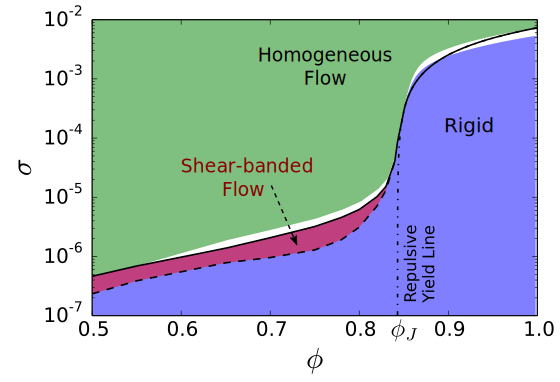
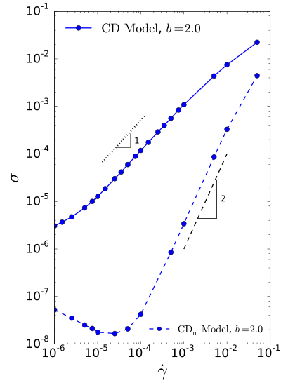
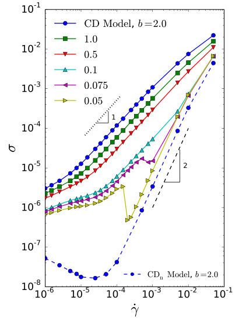
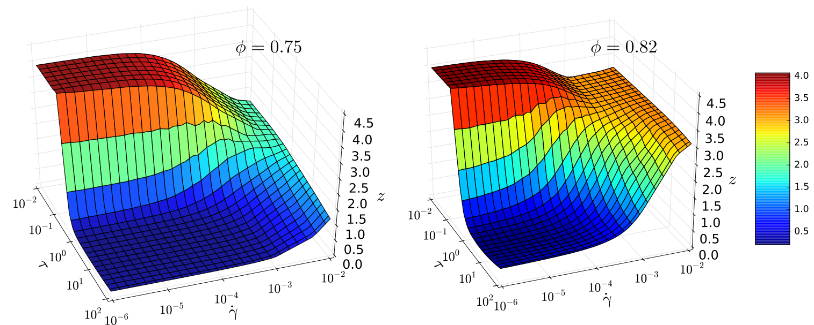

Rheology of Weakly Attractive Soft Particles
Ehsan Irani¹, Pinaki Chaudhuri², Claus Heussinger¹
¹ Institute for Theoretical Physics, Georg-August-Universität Göttingen
² Institute of Mathematical Sciences, Tamil Nadu, India
I. Introduction
Jamming Transition
(Repulsive, Friction-less)

Jamming: Complex fluids, become solid with increasing volume fraction.
I. Introduction
Motivation
All of that is true for repulsive systems!
what about attractive systems?
Examples:
- Capillary bridges
- Polymeric suspensions
How does attraction change the rheology of soft particles?
Details of interactions:
Role of dissipation?
II. The Model
Simulation Setup
Conservative Force:
Harmonic repulsive core
Small attractive tail:
Range=$2u$
Depth $\propto \epsilon u$
Dissipative Force:
($\text{CD}_n$ Model)
$\vec{F}_{\text{diss.}} = -b[(\vec{v}_i - \vec{v}_j).\hat{r}]\hat{r}$
III. Results: $\text{CD}_n$ Model (Over-damped)
Flow Curves
($N=1000$, $u=2\times10^{-4}$)
- Bagnold scaling: $\sigma \sim \dot\gamma^2$
Attraction-dominated regime:
- Finite yield stress
- Non-monotonic flow curves
E. Irani, P. Chaudhuri, C. Heussinger, Phys. Rev. Lett. 112, 188303 (2014)
III. Results: $\text{CD}_n$ Model (Over-damped)
Flow Curves
($N=1000$, $u=2\times10^{-4}$)
Phase diagram: 
III. Results: $\text{CD}_n$ Model (Over-damped)
Connectivity
($N=1000$, $\phi=0.75$)
Nearly-isostatic
network of particles
$$\tau_a \approx 1/u$$
III. Results: $\text{CD}_n$ Model (Over-damped)
Non-monotonic Flow Curves
- Shear bands don't fit inside
Large Systems:
- Shear bands reduce the non-monotonic part
- History dependence
E. Irani, P. Chaudhuri, C. Heussinger, Phys. Rev. E 94, 052608 (2016)
III. Results: $\text{CD}_n$ Model (Over-damped)
Shear Bands
($N=10^4$, $\phi=0.75$, $\dot\gamma_0=5\times10^{-6}$)

Iso-static solid + fluid band
- Solid band: $z \uparrow$, $\phi \downarrow$
- Fluid band: $z \downarrow$, $\phi \uparrow$
III. Results: $\text{CD}$ Model
$\text{CD}_n$ Model vs. $\text{CD}$ Model
Until here: $\text{CD}_n$ Model
$\vec{F}_{\text{diss.}} = -b[(\vec{v}_i - \vec{v}_j).\hat{r}]\hat{r}$
From here: $\text{CD}$ Model
$\vec{F}_{\text{diss.}} = -b(\vec{v}_i - \vec{v}_j)$
IV. Results: $\text{CD}$ Model
Flow Curves
($N=1000$, $u=2\times10^{-5}$, $\phi=0.75$)
- Viscous behaviour
$\sigma \sim \dot\gamma$

IV. Results: $\text{CD}$ Model
Flow Curves
($N=1000$, $u=2\times10^{-5}$, $\phi=0.75$)
- Viscous behaviour
$\sigma \sim \dot\gamma$
Decereasing damping:
- Inertial flow
- Non-monotonic flow curves

IV. Results: $\text{CD}$ Model
Flow Curves
($N=1000$, $u=2\times10^{-5}$, $\phi=0.75$)
- Elastic forces vs. dissipative forces
- Weissenberg number
$Wi={b\dot\gamma\over \epsilon u}$
IV. Results: $\text{CD}$ Model
Flow Curves
($N=1000$, $u=2\times10^{-5}$, $\phi=0.75$)
- Inertial flow
- Non-monotonic flow curves
Qustion: What is happening at the non-monotonic part?
IV. Results: $\text{CD}$ Model
Movies: Velocity & Connectivity
($N=1000$, $u=2\times10^{-5}$, $\phi=0.75$, $b=0.05$, $\dot\gamma=2\times10^{-4}$)
IV. Results: $\text{CD}$ Model
Shear Bands
- Viscous + inertial band
- Stress localization

IV. Results: $\text{CD}$ Model
Ramping Simulations
($N=1000$, $u=2\times10^{-5}$, $\phi=0.75$, $b=0.05$)
Conclusion
Attraction + $\text{CD}_n$
- Finite yield stress ($\phi<\phi_{\text{J}}$)
- Weak solid develops
- Rheology $\leftrightarrow$ Connectivity
- Non-monotonic flow curves
- Persistent shear bands
- Iso-static solid + fluid bands
- Local $\phi$ and $z$: Anti-correlated
Attraction + $\text{CD}$ Model
- Overdamped:
- Viscous flow
- $Wi$: scaling flow curves
- Underdamped
- Persistent shear bands
- viscous flow + inertial flow
- Local $\phi$ and $z$: Correlated
Thank you for your attention!
V.I Appendix: $\text{CD}_n$ Model (Under-damped)
Changing Damping Factor
$\vec{F}_{\text{diss.}} = -b[(\vec{v}_i - \vec{v}_j).\hat{r}]\hat{r}$
Damping time-scale:
$$\tau_d = {m\over b}$$
E. Irani et al., Phys. Rev. E 94, 052608 (2016)
V.II Appendix: Yield Stress
Elastic Spring Network
- Close to the iso-static point¹:
$\delta_\bot\sim {\gamma \over \delta z^{1/2}}$
- Shear modulus:
$g_{\text{lin}} \sim \delta z$- Non-linear loading²⁻³:

$\sigma_{\text{y}} \sim u^{1/2}\delta z^{3/2}$
¹ M. van Hecke, J. Phys: Condens. Matter, 22, 033101 (2010).
² M. Wyart, et al. , Phys. Rev. Lett. 101, 215501 (2008).
³ O Lieleg, et al. , Phys. Rev. Lett. 99, 088102 (2007).
V.II Appendix: Yield Stress
Yield Stress: Scaling
Below the Jamming:
$\sigma_{\text{y}} \propto u^{1/2}\delta z^{3/2}$Above the Jamming:
$\sigma_{\text{y}} \propto \delta\phi^\alpha$V.III Appendix: Thermal Fluctuations
Thermal Fluctuations
- Back to $\text{CD}_n$ Model
$\vec{F}_{\text{diss.}} = -b[(\vec{v}_i - \vec{v}_j).\hat{r}]\hat{r}$
- Random force: DPD Scheme
$\vec{F}_{\text{R}} = \alpha\sqrt{\frac{2b K_B T}{\Delta t}}\hat{r}$
$\alpha$: Gaussian random number
- Ratio of thermal energy to attractive energy:
$\tau = K_B T/\epsilon u^2$
V.III Appendix: Thermal Fluctuations
Flow Curves
$\sigma_T = \frac{K_B T}{R^3}$
- Time-scale:
$t_T = R \sqrt{\frac{m}{K_B T}}$
Peclet number
$P_e=\dot\gamma t_T$
Athermal + intermediate + thermal regimes!
V.III Appendix: Thermal Fluctuations
Connectivity

Intermediate to thermal regime:
Sharp drop in $z$
V.III Appendix: Thermal Fluctuations
Connectivity
Yield connectivity: $$z_y=\lim_{\dot\gamma \to 0} z(\dot\gamma)$$ Here: $$z_y \approx z(\dot\gamma=10^{-6})$$
Intermediate to thermal regime:
$$z_y^{\text{(rep)}} \approx z_y^{\text{(att)}}$$V.III Appendix: Thermal Fluctuations
Movies
($u=2\times10^{-4}$, $\phi=0.75$, $\dot\gamma=10^{-6}$)
V.III Appendix: Thermal Fluctuations
Phase Separation
($u=2\times10^{-4}$, $\phi=0.75$)

Phase Structures:
V.III Appendix: Thermal Fluctuations
Phase Separation
($u=2\times10^{-4}$, $\phi=0.75$)
$$N^* = \frac{N^{(\text{in clust.})}}{N}$$
$\tau$, $\dot\gamma$: Complicated interplay
V.IV Appendix: Shear Bands in $\text{CD} Model$
Stress Localization

Larger $\Delta\gamma$:
Virial stress builds up in the inertial band.